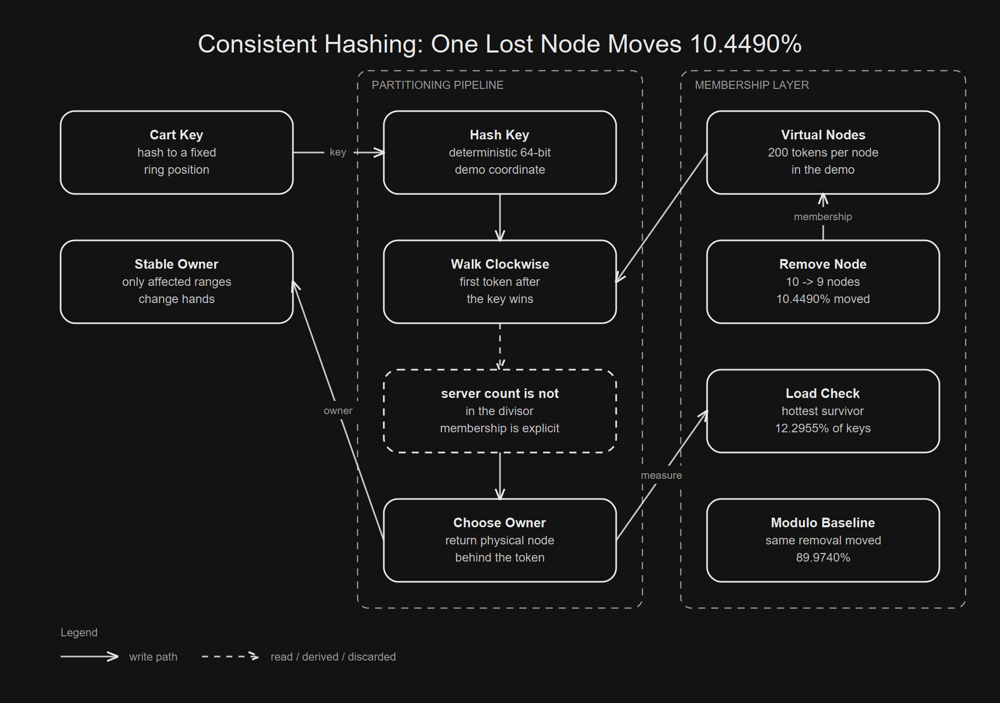

Remove one server and most remainders change.
The next token owns the interval.
Tokens must be chosen, stored, and refreshed.

01 / The naive solution
The Obvious Cache Shard Starts With Modulo
The schema more or less writes itself. A key arrives. The cache has a list of servers. Hash the key, divide by the server count, and use the remainder.
Server owner(String key) {
int slot = Math.floorMod(hash(key), servers.size());
return servers.get(slot);
}That code is sympathetic because it has the right local properties. It is deterministic. It is fast. With a stable server list, it spreads traffic well enough.
hash(cart:7) % 10 = 3
hash(cart:8) % 10 = 6
hash(cart:9) % 10 = 1The mistake is not in the hash. The mistake is hiding membership inside the divisor.
Modulo treats the server list as if it were a constant. In real systems, membership is one of the least constant things in the room.
03 / Stable coordinates
Dynamo Turns The Server List Into A Ring
Amazon's Dynamo paper says the system hashes keys into a fixed circular space. Section 4.1 says Dynamo applies MD5 to generate a 128 bit identifier. Section 4.2 says the range is treated as a ring.
0 ------------------------------------------------ 2^128
^ |
|________________________________________________|The server count is no longer part of the formula. A node owns positions on the circle. A key lands somewhere on the same circle.
key hash
|
v
---x---------A---------B---------C---------D------
^
first node clockwise owns itThe ring gives the system a stable vocabulary. Keys do not belong to array indexes anymore. They belong to intervals.
04 / Lookup rule
A Key Walks Clockwise Until It Finds An Owner
The core rule is small enough to fit in one function. Hash the key. Find the first token greater than that hash. If none exists, wrap around.
String owner(String key) {
long h = hash64(key);
var token = tokens.ceilingEntry(h);
return token == null ? tokens.firstEntry().getValue()
: token.getValue();
}The ring makes ownership a property of ranges, not array indexes.
(A, B] => B
(B, C] => C
(C, D] => DThat is the useful shift. The key map can survive a changing server list because the coordinate system stays fixed.
05 / Local movement
One Leaving Node Should Only Move Its Own Range
Dynamo section 4.2 states the principle advantage: a node departure or arrival affects immediate neighbors while other nodes remain unaffected.
before: A ---- B ---- C ---- D
after: A ---------- C ---- D
B range moves.
C and D keep their old ranges.The local benchmark with 200 virtual nodes per physical node measured 10.4490 percent movement when one node left a 10 node ring.
mode,event,virtual_nodes_per_node,moved_percent
consistent-ring,remove,200,10.4490That is the whole cache story. A 10 node cache loses roughly one node share instead of almost everything.
06 / Token placement
Virtual Nodes Make One Machine Look Like Many
The basic ring has a problem. If every machine gets one random position, the ranges can be wildly uneven.
A----------------------B--C-------D
| huge A range tiny C |Dynamo addresses this with virtual nodes. Section 4.2 says each node gets multiple positions, called tokens. The physical machine owns all of its token ranges.
A1---B1---C1---A2---D1---B2---C2---D2---A3Now a leaving machine gives up many small ranges, not one large range.
Virtual nodes also make capacity a dial. A larger machine can receive more tokens. A smaller machine can receive fewer.
07 / Metadata tradeoff
More Tokens Trade Metadata For Smoother Load
The trade is not free. More virtual nodes mean more membership metadata and more token maps to gossip or refresh.
few tokens:
A owns one unlucky huge range
many tokens:
A owns many smaller scattered rangesDynamo section 6.2 compares partitioning strategies on a system with 30 nodes and N equals 3. The paper says Strategy 3 improved efficiency and reduced membership information by three orders of magnitude compared with Strategy 1.
Strategy 1: random tokens decide ranges
Strategy 3: fixed partitions decouple placementThe lesson is not to always add tokens. The lesson is to separate stable partitions from changing placement when the system grows up.
08 / Executable evidence
The Local Run Makes The Failure Visible
The repo maps 200,000 synthetic cart keys onto 10 nodes. Then it removes and adds nodes using modulo hashing and the ring.
mode,event,nodes_before,nodes_after,virtual_nodes_per_node,keys,moved_percent,max_load_percent
modulo,remove,10,9,0,200000,89.9740,11.1915
consistent-ring,remove,10,9,200,200000,10.4490,12.2955
modulo,add,10,11,0,200000,90.9350,9.2140
consistent-ring,add,10,11,200,200000,9.3160,10.7990Those numbers come from the default local entrypoint. They are evidence for the article claim, not measurements from a production cache fleet.
09 / What to measure
The Useful Number Is Movement, Not Hash Speed
Hashing speed is the wrong benchmark for this idea. The system is protecting cache locality during membership changes.
bad question:
how fast is the hash?
better question:
how much ownership changes?The benchmark also reports the hottest node after the change. With 200 virtual nodes per machine, the hottest node after removal held 12.2955 percent of keys.
10 nodes => 9 nodes
ideal after removal: 11.1111%
measured hottest: 12.2955%Movement alone can make a broken ring look good. Skew alone can make modulo look fine before the first membership change. The pair tells the actual operational story.
10 / Mechanism
The Real Code Is Almost The Whole Trick
The implementation is intentionally small. A sorted map stores token positions. Lookup is a ceiling search.
Map.Entry<Long, String> entry = tokens.ceilingEntry(hash);
if (entry == null) {
entry = tokens.firstEntry();
}
return entry.getValue();The modulo baseline stays in the repo because it is the bug in executable form.
int index = Math.floorMod(hash(key), nodes.size());
return nodes.get(index);A mechanism article is stronger when the wrong version is runnable too.
11 / Operational cost
Membership Becomes A Thing You Operate
Consistent hashing does not delete complexity. It moves complexity from every key lookup into membership management.
tokens must be:
chosen
persisted
gossiped
refreshed
rebalancedDynamo makes that cost visible. Section 6.4 says clients may poll a random Dynamo node every 10 seconds for membership updates. Section 6.2 also says one refined strategy required coordination when membership changed.
less key movement
more explicit membership stateThat is a good trade only when warm ownership matters.
12 / Build one
Build The Dumb Version Yourself
Build the smallest thing that proves the property.
[ ] implement modulo ownership
[ ] implement ring ownership
[ ] generate deterministic keys
[ ] remove one node
[ ] count changed owners
[ ] write the CSVDo not start with replication, quorum reads, hinted handoff, or vector clocks. Those are Dynamo ideas too. They are not needed to see why the ring exists.
./gradlew bootRun
./gradlew testThe repo should make the central claim executable before it tries to look complete.
13 / Adversarial proof
Then Break It
The adversarial tests are more important than the happy path.
remove one server
add one server
use one virtual node
use many virtual nodes
verify removed nodes own nothing
verify the CSV is writtenThe one token test is deliberately ugly. In the local run, one virtual node per machine left the hottest node with 27.4315 percent of keys after removal.
mode,event,virtual_nodes_per_node,moved_percent,max_load_percent
consistent-ring,remove,1,2.7995,27.4315Low movement alone can be a trap. A ring that barely moves keys but overloads one survivor is still a bad ring.
14 / The part that generalizes
The Larger Lesson Is To Make The Coordinate System Explicit
The larger lesson is that scalable systems often make the hidden coordinate system explicit. Modulo hashing smuggles membership into arithmetic. Consistent hashing gives membership a shape the system can change deliberately.
wrong model:
server = hash(key) % current_server_count
better model:
key position stays fixed
membership moves around itStable ownership is not magic. It is membership made explicit.
You are not keeping every server alive. You are keeping the coordinate system still.